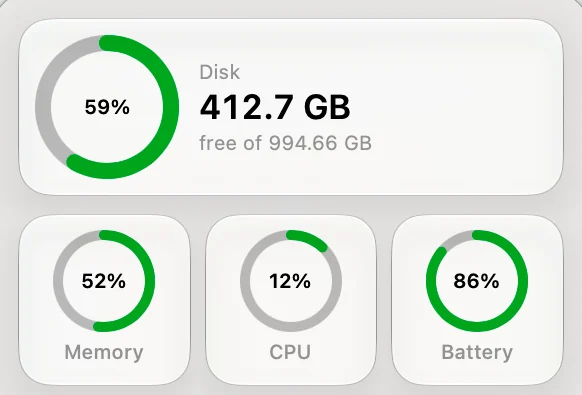

Lightly permanently deletes files, by itself, with no confirmation.
The first automatic clean runs one hour after first launch, then every hour. Read what it cleans and what it never touches first. The software comes with no warranty.
Install it
- Unzip the download and move
Lightly.appto/Applications. - Open it. macOS warns you, because this build is not notarized by Apple.
- Go to System Settings, Privacy & Security, and choose Open Anyway.
- To clean the Trash too, turn on Full Disk Access for Lightly in the same place.

What you need
One thing is required. The other two are optional.
macOS 27 on Apple Silicon
Required for everything.
Full Disk Access
Optional. Only for cleaning the Trash.
Apple Intelligence
Optional. Only for Dusty. The rest works without it.
Check the file
Compare the checksum of Lightly-1.0.0.zip with the one here before you open it.
shasum -a 256 Lightly-1.0.0.zip
7460b792eade3d70098ccd35870f3727141f73f0d42a10889da84141dfd10493Or build it yourself
A build from source is a dry run, which deletes nothing. Add --live for one that really cleans.
git clone https://github.com/jsonrls/lightly
cd lightly
swift test
scripts/bundle.sh # dry run
scripts/bundle.sh --live # really deletesOnce it is running
Look for the small white ring in your menu bar. Click it to see your disk and the last clean. There is no main window and nothing else to do.
Questions
Set your pace
Every hour is the default. If that feels like a lot, change it in Settings before the first clean.